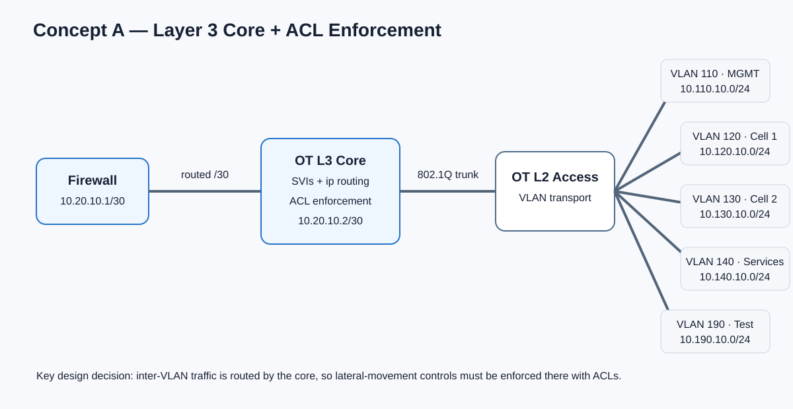
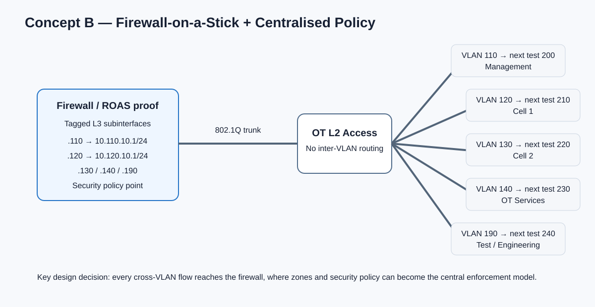

Design before implementation
Engineering question
The objective was not to copy a finished lab topology. It was to compare two credible ways of separating OT VLANs and decide where Layer 3 routing and security enforcement should live.
The same functional OT networks can be implemented with different control points. In one architecture a Layer 3 core switch owns the VLAN gateways and applies ACLs. In the other, the access layer remains Layer 2 and the firewall owns tagged Layer 3 subinterfaces, making firewall policy the inter-VLAN control point.
Packet Tracer is used here as a fast conceptual validation tool. The final implementation and measurements will be performed in the Proxmox OT lab with PNETLab and Palo Alto VM-Series.
Engineering workflow
Model → prove → compare → implement
Before changing the main virtual lab, each concept was reduced to the smallest topology capable of proving the routing behaviour. This makes assumptions visible and keeps troubleshooting separate from the larger Proxmox environment.
Segment OT functions into separate VLANs and control lateral movement between them.
Create two architectures with different locations for Layer 3 gateways and policy enforcement.
Confirm addressing, trunks, gateways, routing tables and permitted or denied cross-VLAN paths.
Increase VLAN count and compare configuration effort, visibility, performance and troubleshooting complexity.
Concept A · distributed enforcement
Layer 3 core routing with ACL control
Concept A keeps the current OT VLAN set: 110, 120, 130, 140 and 190. The Layer 3 core switch owns the SVIs and therefore acts as the default gateway for each subnet. A routed 10.20.10.0/30 transit connects the core to the upstream firewall.

Routing point
SVIs on the Layer 3 core: 10.110.10.1, 10.120.10.1, 10.130.10.1, 10.140.10.1 and 10.190.10.1.
Security point
Inter-VLAN traffic can be routed locally by the core, so ACLs must enforce the intended communication matrix before traffic can move laterally.
Concept B · centralised enforcement
Firewall-on-a-stick with tagged Layer 3 subinterfaces
Concept B moves the default gateways to the firewall. Packet Tracer uses router-on-a-stick to prove the forwarding model: one physical interface carries an 802.1Q trunk and each VLAN has a tagged Layer 3 subinterface. The same principle can later be implemented with Palo Alto Ethernet Layer 3 subinterfaces and security zones.

The preliminary proof used VLANs 110–190. The next iteration will deliberately expand Concept B to VLANs 200, 210, 220, 230 and 240 so scalability can be compared against the unchanged Concept A baseline.
Palo Alto translation
The Cisco ROAS subinterfaces are a conceptual substitute for Palo Alto Layer 3 subinterfaces such as ethernet1/2.200, each carrying an 802.1Q tag, gateway address and security-zone membership.
What changes architecturally
Same segmentation requirement, different control point
| Design factor | Concept A | Concept B |
|---|---|---|
| VLAN gateway | L3 switch SVI | Firewall subinterface |
| Inter-VLAN routing | L3 core | Firewall |
| Primary enforcement | Switch ACL | Firewall security policy |
| Core-to-firewall link | Routed /30 transit | 802.1Q trunk |
| Firewall visibility of cross-VLAN flows | Not automatic when routed locally | Cross-VLAN flows traverse firewall |
| Scaling concern | SVI and ACL management | Subinterfaces, zones, policy and firewall capacity |
A VLAN provides a Layer 2 segmentation boundary; it does not by itself define which routed communication is authorised. The experiment therefore focuses on the enforcement mechanism between those boundaries, not simply on whether VLANs exist.
Planned comparison
Testing scalability instead of assuming it
The next test will hold Concept A as a five-VLAN baseline while Concept B is extended with VLANs 200–240. Later iterations can increase both designs toward 10 and 20 segments. The purpose is to measure engineering consequences rather than declare a preferred architecture in advance.
Configuration effort
Count the objects and configuration changes required to introduce an additional secured OT segment.
Security visibility
Compare how easily authorised and unauthorised inter-VLAN flows can be identified, logged and explained.
Network performance
Measure latency, throughput, jitter and packet loss as the topology and traffic matrix grow.
Operational complexity
Record troubleshooting steps, policy maintenance, failure behaviour and the effort needed to prove a configuration is correct.
Next article in the loop
From conceptual proof to the Proxmox OT lab
The Packet Tracer models are not the final architecture. They are preliminary engineering evidence used to decide what should be implemented and measured next. Concept B will now be recreated on the Palo Alto VM with tagged Layer 3 subinterfaces and explicit security zones, while Concept A remains available as the Layer 3 core and ACL baseline.
The resulting tests will feed later portfolio articles covering implementation, firewall policy, scalability, performance data and the final architecture decision. Each article can therefore link back to the assumptions and proof established here.